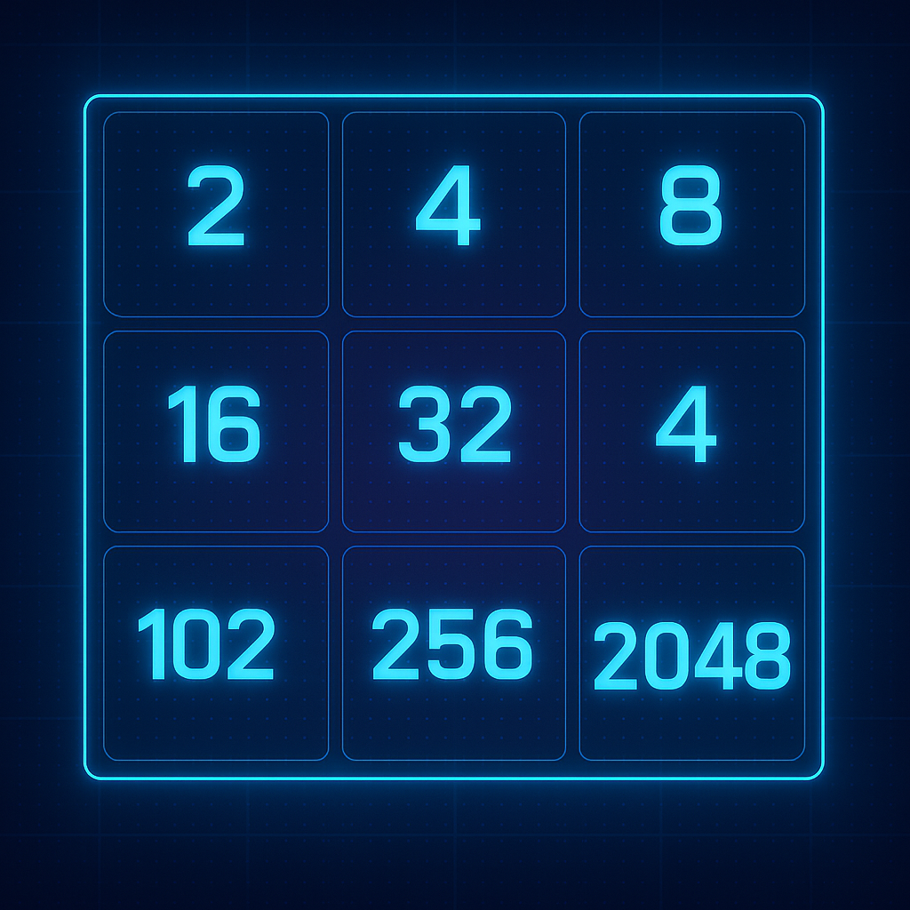
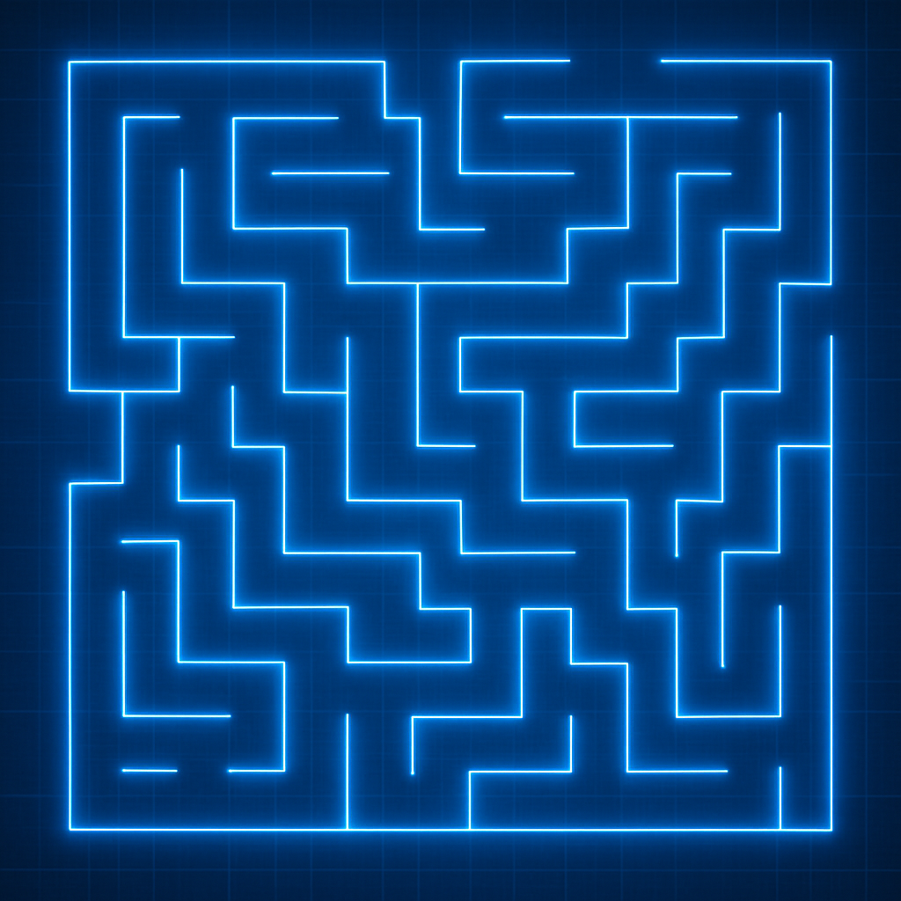

Projects

Shortest Path to 2048
This C++ project simulates the 2048 game to find the shortest path to reach the 2048 tile from a given starting board state. It reads the initial board from a file, then performs randomized sequences of moves (up, down, left, right) to simulate gameplay. The algorithm repeats this process, each time tracking move sequences and checking for a successful 2048 merge. If a successful path is found, it records the shortest move sequence as an integer. If no such path exists, the program outputs "Impossible".
View Project
Maze Solving Robot "Wall-E"
For our final project in ECE 4437 at the University of Houston, my team and I designed and built an autonomous robot capable of navigating a complex maze. We engineered the platform from the ground up—selecting hardware, integrating sensors, writing real-time control algorithms, and developing pathfinding logic that enabled the robot to interpret its environment, make decisions on the fly, and avoid obstacles. Rigorous iterative testing in simulated and real-world maze scenarios allowed us to fine-tune its performance. Our efforts paid off in the class’s culminating competition: our robot executed its runs with speed, precision, and reliability, earning us an impressive third-place finish.
View Project
Problem Organizer
This C++ project simulates a command-driven problem management system using a custom-built doubly linked list. Designed to parse structured input from external files, the program supports dynamic addition, deletion, and multi-criteria sorting of problem nodes by attributes such as ID, name, and difficulty. It handles real-time operations like inserting nodes at specific positions, removing entries by value or index, and sorting in increasing or decreasing order, all while maintaining data integrity through pointer-based node traversal. The project demonstrates proficiency in low-level memory management, linked list algorithms, file I/O handling, and modular design.
View Project
Message Decoder
This C++ project implements a custom message decoder that processes a sequence of text-based transformation commands to reveal hidden messages. The program reads encoded instructions from an input file, prioritizes them based on associated numeric values, and applies operations such as character replacement, removal, swapping, and insertion. Using a queue and a priority queue, it maintains the correct execution order, ensuring that each transformation is performed sequentially and accurately. Once all decoding steps are complete, the final message is output to a file. This project showcases proficiency in file handling, string manipulation, data structures, and control flow logic in C++.
View Project